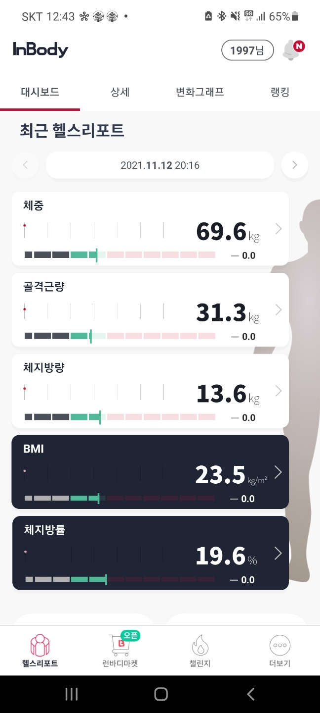
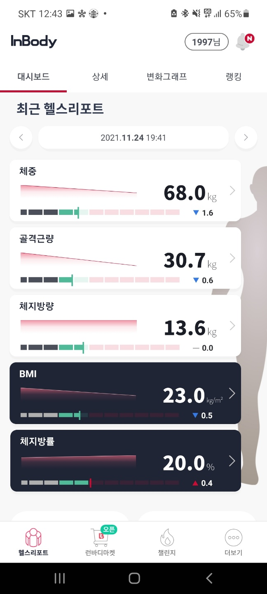
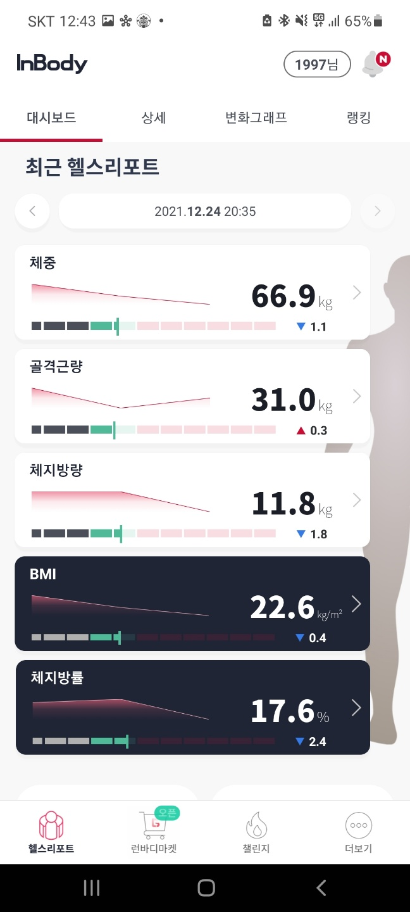

- 날짜별 눈바디
- 식단과 식사량의 변천사
- 운동시 주의사항
- 인바디(Inbody)
- 자유게시판
인바디 체크
inbody 체크는 헬스장에 있는 머신으로만 할 수 있었어서 집에서 홈트레이닝을한 3개 동안은 inbody 기록이 없습니다. ㅜㅜ
우선 "다이어트를 시작해야겠다!" 라고 마음을 먹었을 때 몸무게는 82kg 이였습니다. 그때의 눈바디 사진이 존재합니다. 엄청납니다.
그렇게 집에서 맨몸 운동과 식단 조절을 통해 82kg에서 72kg까지 감량에 성공하였습니다. 그러고 헬스장에서 운동을 약 2주 정도 진행한 후 inbody를 측정한 것이 다음 사진과 같습니다.

헬스장을 처음 등록하고 운동을 하면서 생각보다 금방 2kg에 감량에 성공하였습니다. 아무래도 근력운동을 하지 않다가 하게 되어서 칼로리 소모가 커서 그런것도 있겠죠?
많은 분들이 그러시겠지만 PT(personal training)를 하기엔 돈이 부담스러워서 그냥 등록하고 기구 몇 번 끄적거리고 런닝 머신을 뛰며 시간을 보내시는 분들이 많으셨을 겁니다.
저도 처음에는 아무래도 집에서만 맨몸 운동만 하다가 헬스장에 가면 어떤 운도을 해야할지 감이 오지 않아서 인터넷을 통해 운동 방법, 운동 루틴, 식단, 많은 지식들을 습득하려고 노력하였습니다.
그렇게 제가 인터넷 혹은 유튜브를 통해 얻은 지식으로 정말 꾸준히 하였습니다. 그렇게 다음과 같이 2주 안되는 시간에 또 다음과 같이 감량에 성공하였습니다.

몸무게는 2주만에 빠진거 치곤 만족스러운 결과였습니다. 그러나 골격근량은 줄어들고 체지방량은 줄어들었습니다. 이것이 뜻하는 바가 무엇이냐면 살이 빠진게 아니라 근육이 빠진거 입니다.
ㅠㅠㅠ 나름 열심히 꾸준히 했는데 지방은 그대로 있고 근육만 빠지다니... 믿기 싫었습니다. 그래도 언젠간 좋아질꺼라는 믿음을 가지고 하루하루 열심히 운동을 하고 가끔 트레이너분들의
조언도 받으면서 열심히 하여 한달 뒤! 다시 12월 24일 크리스마스 이브에 헬스장에서 inbody를 측정해 봤습니다. 제발제발~!!!

짝짝짝~~!! 전체 몸무게는 저번 측정대비 1.1kg 감량이 되었고 골격근량 0.3kg 증가! 체지방 1.8 감량에 성공 하였습니다~~~~!!! 박수~!
물론 운동을 제대로 하시는 분들이 보기엔 시간 대비 효율이 너무 안나온다고 생각하실 수 있습니다. 저도 그렇게 생각하거든요. ㅠㅠ
그런데도 저는 지금처럼 유튜브를 통해 정보를 얻고 그걸 또 저한테 적용해보고 틈틈히 트레이너분들한테 질문해서 운동 방법을 제것으로 익힐 예정입니다.
운동을 하면 할수록 처음 시작할 때 만큼은 PT를 받는게 중요하다는 것을 느끼고 있습니다. 그렇지만 아직 대학생 신분인 저에겐 헬스장 다니는 비용을 내는 것만 해도 큰 마음을 먹고 내야하며
평상시 생활비를 아껴가면서 그 돈을 모아야합니다. 그런 생활 중에 PT를 받을 돈은 없습니다. 큰 일을 하기 위해서는 투자가 필요하다라는 생각 또한 동감합니다. 그렇지만 아직 저에게는
PT는 아직 시기상조이며 과소비 입니다. 다들 돈을 아끼고 모우는 이유가 있으시겠지만 저 또한 돈을 모아야할 이유가 있습니다. 저같은 분들이 많으리라 생각하며 다 같이 파이팅 했으면 합니다.
다음 인바디 측정은 1월 24일에 하려고 생각 중에 있습니다. 그럼 그때까지 다들 건강하쎄용~ ㅎㅎ